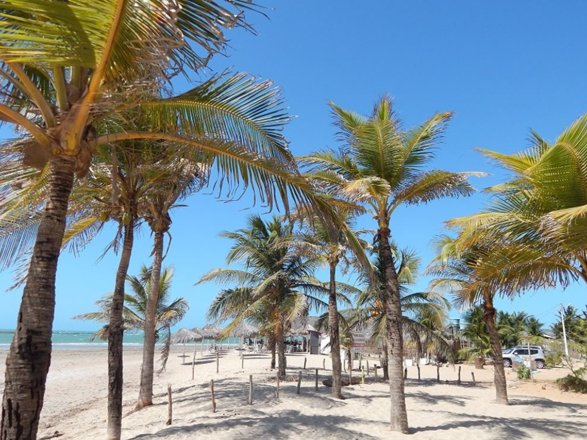

O Piauí é um estado brasileiro marcado por uma riqueza cultural e natural singular, destacando-se por ser o lar do Parque Nacional da Serra da Capivara, um patrimônio mundial da UNESCO que abriga a maior concentração de sítios arqueológicos das Américas, revelando vestígios milenares da ocupação humana. Sua paisagem é um fascinante contraste entre a aridez da caatinga no interior e a surpreendente beleza do Delta do Parnaíba, o único delta em mar aberto das Américas, que oferece um ecossistema exuberante de manguezais e ilhas fluviais. Além de sua história ancestral, o estado é reconhecido pela hospitalidade calorosa de seu povo, pela força das tradições populares e por um potencial crescente em energias renováveis, consolidando-se como um destino que une passado histórico, biodiversidade e um futuro de desenvolvimento sustentável.
